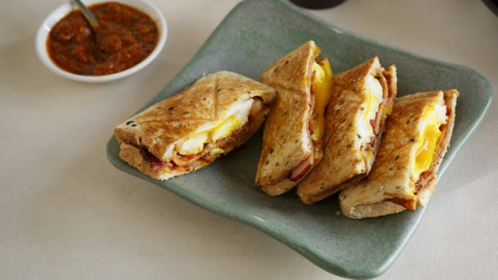

Bacon and Egg jaffle

Description
This is a bacon and egg jaffle. Do you like bacon? Do you like egg? I don't think more needs to be said.
Ingredients
- 2 pieces bread
- 2 rashers bacon
- 1 large egg (cage free)
- Generous pinch of spring onion
- Butter to spread
Method
- Fry your bacon! Not too crispy, unless you're a deviant.
- Butter the bread, one side each slice.
- Pop one of the slices butter-down into your jaffle maker or jaffle iron.
- Crack your egg in there.
- Sprinkle your spring onion on top.
- Toast it in the jaffle iron/jaffle machine for approx. 3 minutes
- Serve and enjoy!